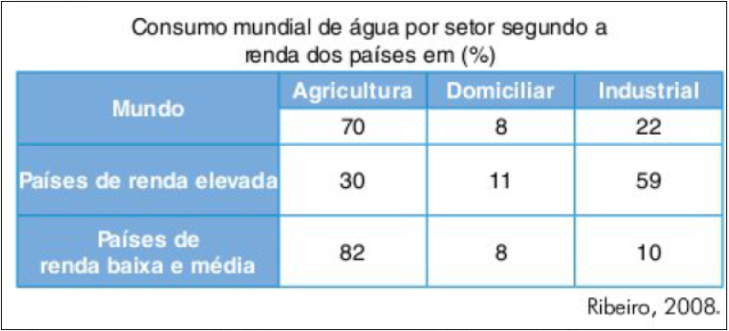
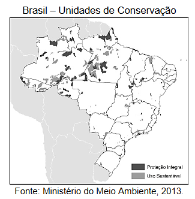
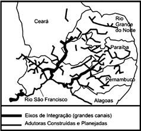

Aula 13 - A questão do meio ambiente no Brasil e no mundo
Questão 01
(Enem) A questão ambiental, uma das principais pautas contemporâneas, possibilitou o surgimento de concepções políticas diversas, dentre as quais se destaca a preservação ambiental, que sugere uma ideia de intocabilidade da natureza e impede o seu aproveitamento econômico sob qualquer justificativa.
PORTO-GONÇALVES, C. W. A globalização da natureza e a natureza da globalização. Rio de Janeiro: Civilização Brasileira, 2006 (adaptado).
Considerando as atuais concepções políticas sobre a questão ambiental, a dinâmica caracterizada no texto quanto à proteção do meio ambiente está baseada na
a) prática econômica sustentável.
b) contenção de impactos ambientais.
c) utilização progressiva dos recursos naturais.
d) proibição permanente da exploração da natureza.
e) definição de áreas prioritárias para a exploração econômica.
Questão 02
(Enem) Como os combustíveis energéticos, as tecnologias da informação são, hoje em dia, indispensáveis em todos os setores econômicos. Através delas, um maior número de produtores é capaz de inovar e a obsolescência de bens e serviços se acelera. Longe de estender a vida útil dos equipamentos e a sua capacidade de reparação, o ciclo de vida desses produtos diminui, resultando em maior necessidade de matéria-prima para a fabricação de novos.
GROSSARD, C. Le Monde Diplomatique Brasil. Ano 3, nº 36, 2010 (adaptado)
A postura consumista de nossa sociedade indica a crescente produção de lixo, principalmente nas áreas urbanas, o que, associado a modos incorretos de deposição,
a) provoca a contaminação do solo e do lençol freático, ocasionando assim graves problemas socioambientais, que se adensarão com a continuidade da cultura do consumo desenfreado.
b) produz efeitos perversos nos ecossistemas, que são sanados por cadeias de organismos decompositores que assumem o papel de eliminadores dos resíduos depositados em lixões.
c) multiplica o número de lixões a céu aberto, considerados atualmente a ferramenta capaz de resolver de forma simplificada e barata o problema de deposição de resíduos nas grandes cidades.
d) estimula o empreendedorismo social, visto que um grande número de pessoas, os catadores, têm livre acesso aos lixões, sendo assim incluídos na cadeia produtiva dos resíduos tecnológicos.
e) possibilita a ampliação da quantidade de rejeitos que podem ser destinados a associações e cooperativas de catadores de materiais recicláveis, financiados por instituições da sociedade civil ou pelo poder público.
Questão 03
(Enem) A poluição e outras ofensas ambientais ainda não tinham esse nome, mas já eram largamente notadas no século XIX, nas grandes cidades inglesas e continentais. E a própria chegada ao campo das estradas de ferro suscitou protestos. A reação antimaquinista, protagonizada pelos diversos luddismos, antecipa a batalha atual dos ambientalistas. Esse era, então, o combate social contra os miasmas urbanos.
SANTOS M. A natureza do espaço: técnica e tempo, razão e emoção. São Paulo: EDUSP, 2002 (adaptado).
O crescente desenvolvimento técnico-produtivo impõe modificações na paisagem e nos objetos culturais vivenciados pelas sociedades. De acordo com o texto, pode-se dizer que tais movimentos sociais emergiram e se expressaram por meio:
a) das ideologias conservacionistas, com milhares de adeptos no meio urbano.
b) das políticas governamentais de preservação dos objetos naturais e culturais.
c) das teorias sobre a necessidade de harmonização entre técnica e natureza.
d) dos boicotes aos produtos das empresas exploradoras e poluentes.
e) da contestação à degradação do trabalho, das tradições e da natureza.
Questão 04
(Unifesp)

De acordo com a tabela, o consumo de água é maior:
a) na agricultura mundial, devido à produção de biocombustíveis.
b) nos domicílios que na agricultura, nos países de industrialização tardia.
c) no setor domiciliar, em países de renda média com altos índices de urbanização.
d) na indústria que na agricultura, em países da primeira revolução industrial.
e) na agricultura, em países com uso intensivo do solo e de renda elevada.
Questão 05
(Enem) No presente, observa-se crescente atenção aos efeitos da atividade humana, em diferentes áreas, sobre o meio ambiente, sendo constante, nos fóruns internacionais e nas instâncias nacionais, a referência à sustentabilidade como princípio orientador de ações e propostas que deles emanam. A sustentabilidade explica-se pela:
a) incapacidade de se manter uma atividade econômica ao longo do tempo sem causar danos ao meio ambiente.
b) incompatibilidade entre crescimento econômico acelerado e preservação de recursos naturais e de fontes não renováveis de energia.
c) interação de todas as dimensões do bem-estar humano com o crescimento econômico, sem a preocupação com a conservação dos recursos naturais que estivera presente desde a Antiguidade.
d) proteção da biodiversidade em face das ameaças de destruição que sofrem as florestas tropicais devido ao avanço de atividades como a mineração, a monocultura, o tráfico de madeira e de espécies selvagens.
e) necessidade de se satisfazer as demandas atuais colocadas pelo desenvolvimento sem comprometer a capacidade de as gerações futuras atenderem suas próprias necessidades nos campos econômico, social e ambiental.
Questão 06
(Unicamp)

“A preocupação com as ‘populações tradicionais’ que vivem em Unidades de Conservação é relativamente recente no Brasil, e até pouco tempo (e ainda hoje para os preservacionistas clássicos) elas eram consideradas ‘caso de polícia’, pois deveriam ser expulsas da terra em que sempre viveram, para a criação de parques e reservas”.
(Antonio Carlos S. Diegues, O mito moderno da natureza intocada. 3ª edição, São Paulo: Hucitec, 2000, p.125.)
a) O que são as Unidades de Conservação e quais seus objetivos principais?
b) A chamada questão ambiental envolve polêmicas entre preservacionistas e conservacionistas. Explique em que consistem o preservacionismo e o conservacionismo.
Questão 07
(Vunesp)
A extração de madeira, especialmente do pau-brasil, os ciclos do açúcar e café e o desmatamento para instalação de indústrias são eventos de nossa história que contribuí ram para a degradação desse bioma. (www.eco.ib.usp.br)
O texto refere-se ao bioma:
a) Mata Atlântica.
b) Caatinga.
c) Cerrado.
d) Pantanal.
e) Floresta Amazônica.
Questão 08
(Unicamp) O mapa abaixo representa a área abrangida pelo projeto de transposição do rio São Francisco.

(Adaptado de http://www.integracao.gov.br/saofrancisco/integracao/info_ampliado.asp.)
a) Qual o principal bioma a ser atingido pela transposição do São Francisco? Dê duas características desse bioma.
b) Indique um impacto positivo e outro negativo esperados no projeto de transposição do São Francisco.